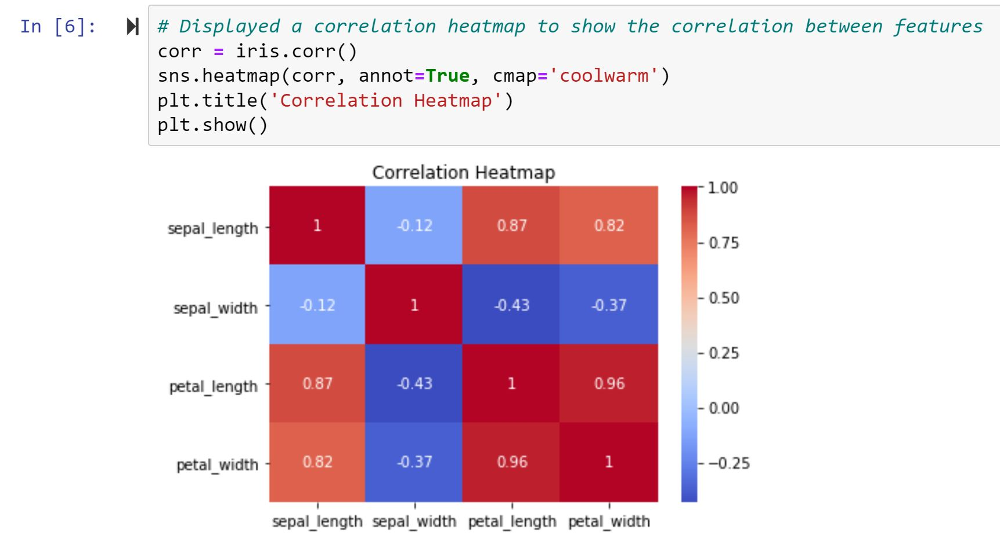
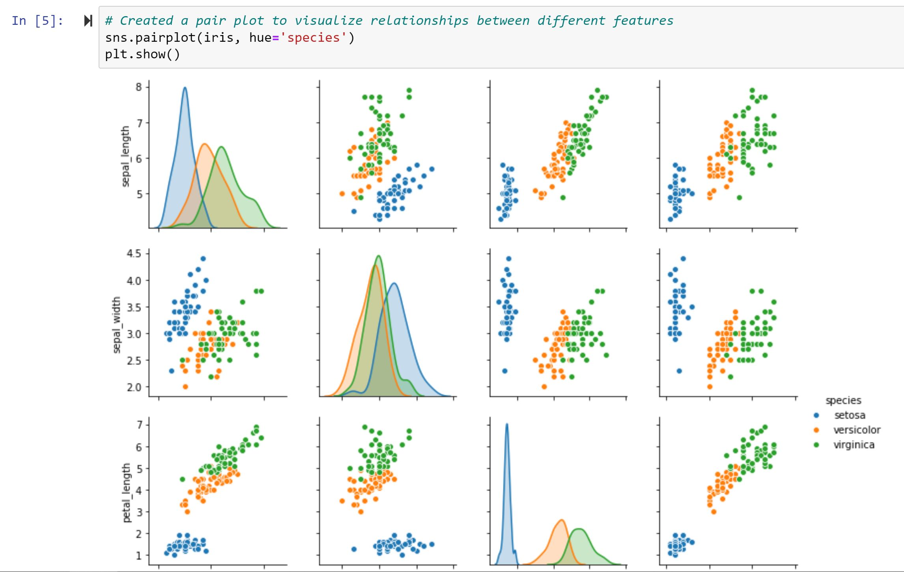

Exploratory Data Analysis (EDA) on the Iris Dataset
In this project, I conducted an Exploratory Data Analysis (EDA) on the well-known Iris dataset. The goal was to gain insights into the characteristics of three different species of iris flowers: setosa, versicolor, and virginica. The dataset comprises four features: sepal length, sepal width, petal length, and petal width.


Project Report: Exploratory Data Analysis on the Iris Dataset
1. Introduction: In this project, I conducted an Exploratory Data Analysis (EDA) on the well-known Iris dataset. The goal was to gain insights into the characteristics of three different species of iris flowers: setosa, versicolor, and virginica. The dataset comprises four features: sepal length, sepal width, petal length, and petal width.
2. Dataset Overview: The Iris dataset contains 150 samples, with 50 samples for each of the three species. There are no missing values in the dataset, making it clean and suitable for analysis. The features include sepal length, sepal width, petal length, and petal width.
3. Exploratory Data Analysis: 3.1 Descriptive Statistics: Descriptive statistics revealed the following insights: Sepal lengths vary from approximately 4.3 to 7.9 units. Sepal widths range from 2.0 to 4.4 units. Petal lengths range from 1.0 to 6.9 units. Petal widths range from 0.1 to 2.5 units.
4. Insights: Setosa is easily distinguishable from the other two species based on its smaller petal length and width. Versicolor and virginica have overlapping characteristics, making them more challenging to differentiate. The correlation between petal length and width indicates a potential relationship that could be explored further.
5. Conclusion: In conclusion, this EDA provides a comprehensive understanding of the Iris dataset, highlighting key characteristics and relationships between features. The insights gained from this analysis can be valuable for further investigations or as a foundation for building predictive models.
This project showcases proficiency in data exploration, visualization, and interpretation—an essential skill set for any data analyst role. The visualizations and findings can be used to communicate complex information effectively.
By incorporating a simple machine learning model, we can predict the species of iris flowers based on their sepal length, sepal width, petal length, and petal width. The accuracy of the model provides insights into its performance.